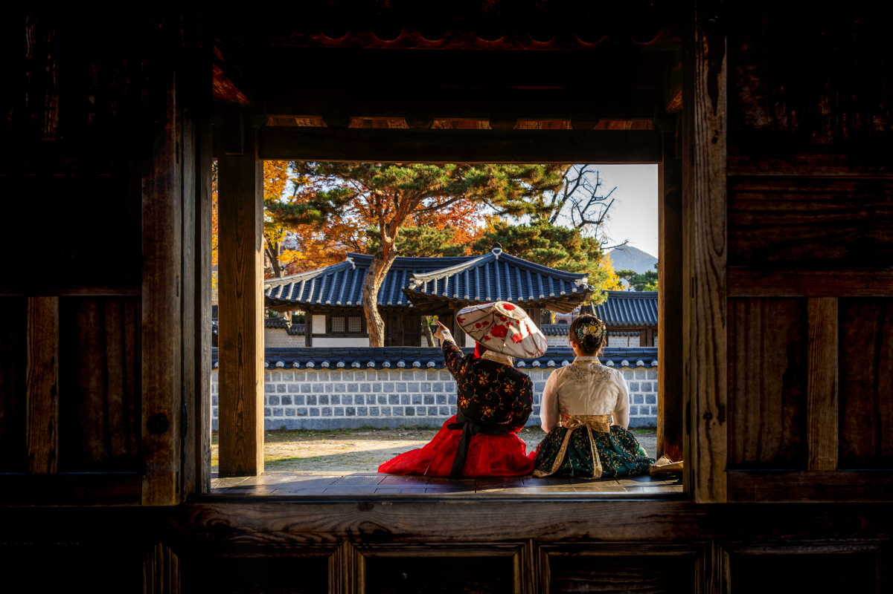

THE MOST KOREAN CITY, JEONJU
Jeonju, often referred to as the "Birthplace of Bibimbap," is a captivating city located in the North Jeolla Province of South Korea. Renowned for its rich cultural heritage, delectable cuisine, and well-preserved Hanok Village, Jeonju offers a unique blend of tradition and modernity.